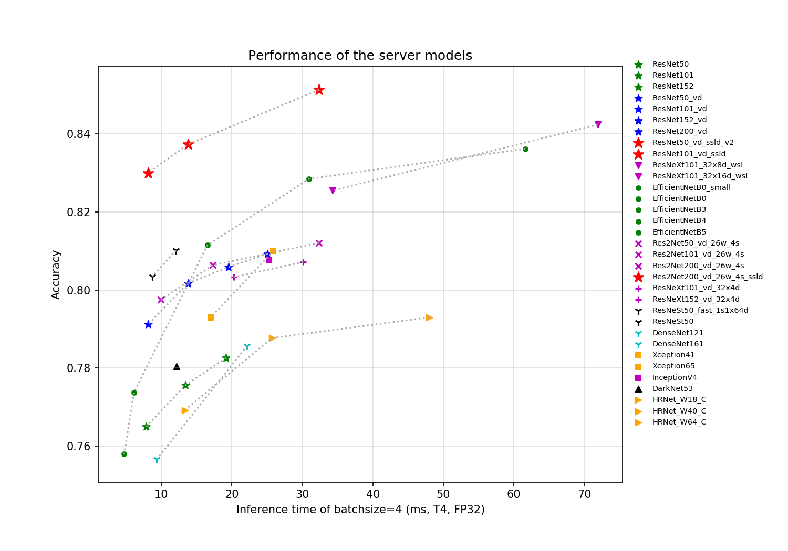

我的OCR之路

简单解释一哈上面的深度学习结构图：
输入的图像经过网络Backbone和FPN提取特征，提取后的特征级联在一起，得到原图四分之一大小的特征，然后利用卷积层分别得到文本区域预测概率图和阈值图，进而通过DB的后处理得到文本包围曲线。
各种backbone的对应的图

1、首先对于detect部分我打算进行一个再训练（不改结构，但是换backbone，因为)，比如提高它的感受野，或者改变学习率等。
目前打算采用res2net50来训练，paddle开源了预训练模型，我目前想法是在这个基础上进行训练和调优。
2、对于识别部分，我打算用自定义的网络结构去进行迁移学习和优化，迁移学习，也就是先用通用数据集，将模型训练到一定程度，然后，接着使用一些独特的数据集进行训练来进行。
3、对于方向分类器，采用paddle里面的方法，用来处理倾斜图片的方法。
4、视工作量，添加是否要进行版面结构分析功能，也就是自动提取关键文字内容。
5、最麻烦的就是将前面训练出来的模型用paddle的工具将其导出成为推理模型，
1 | |
nn.AvgPool2D有以下几个参数：
kernel_size：池化核大小，可以是一个整数或一个元组（Tuple），表示池化核的高度和宽度。
stride：池化步长，可以是一个整数或一个元组，表示池化核在输入特征图上移动的步长。默认为None，表示步长等于池化核大小。
padding：填充大小，可以是一个整数或一个元组，表示在输入特征图的边缘添加的零填充的大小。默认为0，表示不添加填充。
ceil_mode：是否使用向上取整模式，默认为False。如果为True，则在计算输出特征图的大小时，使用向上取整的方式；如果为False，则使用向下取整的方式。
count_include_pad：是否在计算平均值时包含填充值，默认为True。如果为True，则在求平均值时，将填充值也纳入计算；如果为False，则在求平均值时，忽略填充值。
divisor_override：是否使用自定义除数，默认为None。如果不为None，则使用该值作为除数来计算平均值；如果为None，则使用池化核的大小或有效区域的大小作为除数来计算平均值。
nn.AvgPool2D有以下一个方法：
forward(x)：根据给定的参数对输入特征图x进行平均池化操作，并返回输出特征图y。
nn.Conv2D有以下几个参数：
in_channels：输入通道数。
out_channels：输出通道数。
kernel_size：卷积核大小，可以是一个整数或一个元组，表示卷积核的高度和宽度。
stride：卷积步长，可以是一个整数或一个元组，表示卷积核在输入特征图上移动的步长。默认为1。
padding：填充大小，可以是一个整数或一个元组，表示在输入特征图的边缘添加的零填充的大小。默认为0，表示不添加填充。
dilation：空洞大小，可以是一个整数或一个元组，表示在卷积核中每个元素之间插入的空洞的大小。默认为1，表示不添加空洞。
groups：卷积分组数，默认为1。如果大于1，则将输入通道和输出通道分成相等的组数，每个组内进行独立的卷积操作。
weight_attr：权重参数的属性设置，可以是一个ParamAttr对象或者None。默认为None，表示使用默认的初始化方法和正则化方法。
bias_attr：偏置参数的属性设置，可以是一个ParamAttr对象、False或者None。默认为None，表示使用默认的初始化方法和正则化方法。如果为False，则不使用偏置参数。
nn.BatchNorm是一种神经网络层，用于对每个小批量数据的输入进行归一化，使其具有零均值和单位方差。这样可以加速神经网络的训练，提高收敛速度和稳定性。
ResNet_vd是一种基于ResNet的改进网络架构，由百度视觉技术部门提出，用于图像分类和目标检测等任务。ResNet_vd的主要改进有以下几点：
- 在每个卷积层之前增加了一个批归一化层（Batch Normalization Layer），以减少内部协变量偏移（Internal Covariate Shift），加速网络的收敛，提高网络的泛化能力。
- 在每个残差块（Residual Block）的第一个卷积层之前增加了一个平均池化层（Average Pooling Layer），以减少计算量和内存消耗，同时保留特征图的主要信息。
- 在每个残差块的最后一个卷积层之后增加了一个激活函数（Activation Function），以增强特征图的非线性表达能力，提高网络的性能。
配置paddleocr的过程：
1、创建paddleocr的环境，python==3.7;
2、克隆仓库，git clone https://gitee.com/paddlepaddle/PaddleOCR
3、安装依赖包
pip install paddleocr -i https://pypi.tuna.tsinghua.edu.cn/simple
python -m pip install paddlepaddle==2.2.2 -i https://pypi.tuna.tsinghua.edu.cn/simple
因为urllib3>2.0的话，就需要openssll1.1.0以上的版本支持。所以重新安装urllib3
pip install urllib3==1.25.6 -i https://pypi.tuna.tsinghua.edu.cn/simple